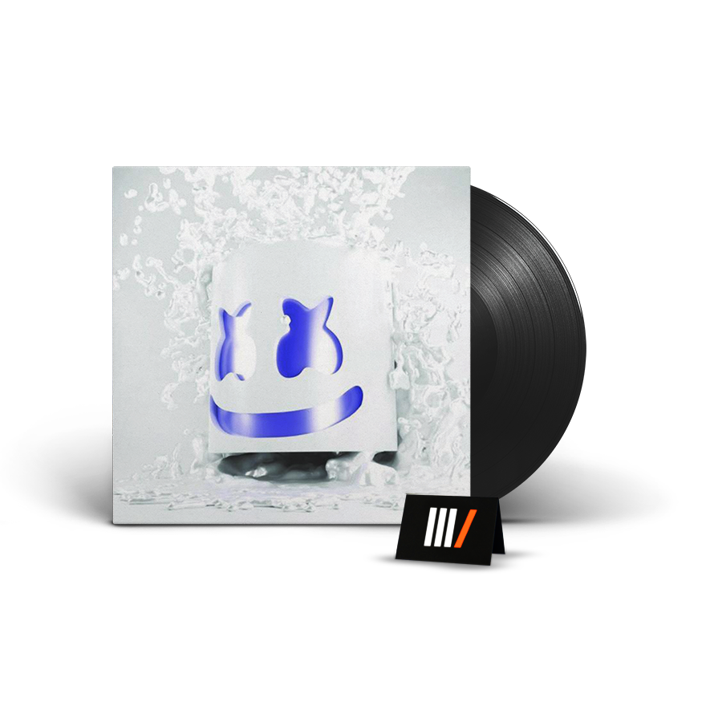
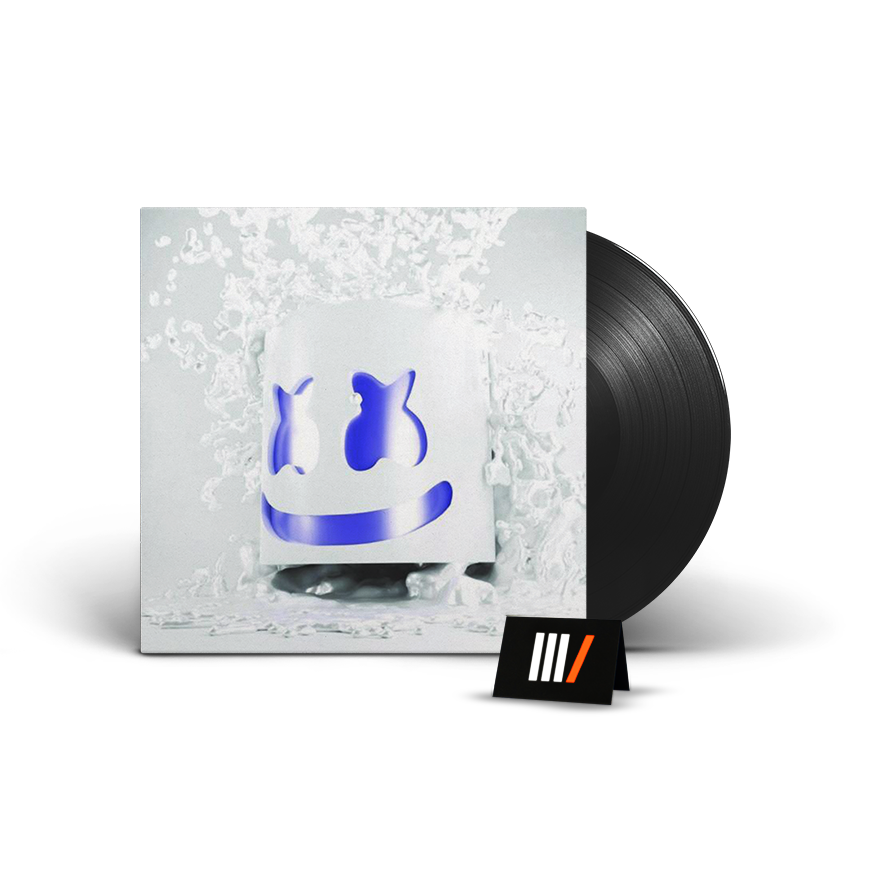
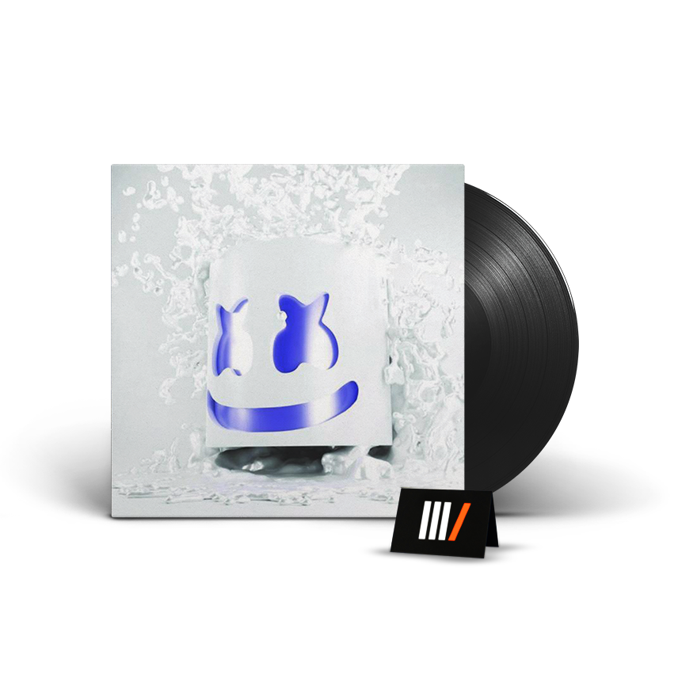

Christopher Comstock ou o marshmello criou vários albúns ao longo da carreira.
O primeiro albun lançado foi o joytime, lançado em 2016. e o ultimo foi o shockwave lançado em 2021.

Marshmello estreou na Monstercat (gravadora canadense independente de dance music) com o lançamento de “Alone“, que apareceu no álbum de compilação da gravadora Monstercat 027 – Cataclysm.
O videoclipe da canção, lançado para o YouTube, recebeu mais de 1,16 bilhão de visualizações em fevereiro de 2019.
A mesma alcançou o status de Platina nos Estados Unidos e no Canadá em 2017 e 2018, respectivamente.
 
